Function¶
- class Function(*args)¶
Function base class.
Notes
A function acts on points to produce points: 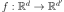.
A function enables to evaluate its gradient and its hessian when mathematically defined.
Examples
Create a Function from a list of analytical formulas and descriptions of the input vector and the output vector :
>>> import openturns as ot >>> f = ot.SymbolicFunction(['x0', 'x1'], ... ['x0 + x1', 'x0 - x1']) >>> print(f([1, 2])) [3,-1]
Create a Function from strings:
>>> import openturns as ot >>> f = ot.SymbolicFunction('x', '2.0*sqrt(x)') >>> print(f(([16],[4]))) [ y0 ] 0 : [ 8 ] 1 : [ 4 ]
Create a Function from a Python function:
>>> def a_function(X): ... return [X[0] + X[1]] >>> f = ot.PythonFunction(2, 1, a_function) >>> print(f(((10, 5),(6, 7)))) [ y0 ] 0 : [ 15 ] 1 : [ 13 ]
See
PythonFunctionfor further details.Create a Function from a Python class:
>>> class FUNC(OpenTURNSPythonFunction): ... def __init__(self): ... super(FUNC, self).__init__(2, 1) ... self.setInputDescription(['R', 'S']) ... self.setOutputDescription(['T']) ... def _exec(self, X): ... Y = [X[0] + X[1]] ... return Y >>> F = FUNC() >>> myFunc = Function(F) >>> print(myFunc((1.0, 2.0))) [3]
See
PythonFunctionfor further details.Create a Function from another Function:
>>> f = ot.SymbolicFunction(ot.Description.BuildDefault(4, 'x'), ... ['x0', 'x0 + x1', 'x0 + x2 + x3'])
Then create another function by setting x1=4 and x3=10:
>>> g = ot.ParametricFunction(f, [3, 1], [10.0, 4.0], True) >>> print(g.getInputDescription()) [x0,x2] >>> print(g((1, 2))) [1,5,13]
Or by setting x0=6 and x2=5:
>>> g = ot.ParametricFunction(f, [3, 1], [6.0, 5.0], False) >>> print(g.getInputDescription()) [x3,x1] >>> print(g((1, 2))) [6,8,12]
Create a Function from another Function and by using a comparison operator:
>>> analytical = ot.SymbolicFunction(['x0','x1'], ['x0 + x1']) >>> indicator = ot.IndicatorFunction(ot.LevelSet(analytical, ot.Less(), 0.0)) >>> print(indicator([2, 3])) [0] >>> print(indicator([2, -3])) [1]
Create a Function from a collection of functions:
>>> functions = list() >>> functions.append(ot.SymbolicFunction(['x1', 'x2', 'x3'], ... ['x1^2 + x2', 'x1 + x2 + x3'])) >>> functions.append(ot.SymbolicFunction(['x1', 'x2', 'x3'], ... ['x1 + 2 * x2 + x3', 'x1 + x2 - x3'])) >>> myFunction = ot.AggregatedFunction(functions) >>> print(myFunction([1.0, 2.0, 3.0])) [3,6,8,0]
Create a Function which is the linear combination linComb of the functions defined in functionCollection with scalar weights defined in scalarCoefficientColl:
where 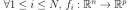 and 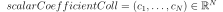 then the linear combination is:
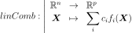
>>> myFunction2 = ot.LinearCombinationFunction(functions, [2.0, 4.0]) >>> print(myFunction2([1.0, 2.0, 3.0])) [38,12]
Create a Function which is the linear combination vectLinComb of the scalar functions defined in scalarFunctionCollection with vectorial weights defined in vectorCoefficientColl:
If 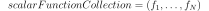 where 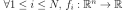 and 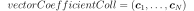 where 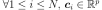
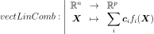
>>> functions=list() >>> functions.append(ot.SymbolicFunction(['x1', 'x2', 'x3'], ... ['x1 + 2 * x2 + x3'])) >>> functions.append(ot.SymbolicFunction(['x1', 'x2', 'x3'], ... ['x1^2 + x2'])) >>> myFunction2 = ot.DualLinearCombinationFunction(functions, [[2., 4.], [3., 1.]]) >>> print(myFunction2([1, 2, 3])) [25,35]
Create a Function from values of the inputs and the outputs:
>>> inputSample = [[1.0, 1.0], [2.0, 2.0]] >>> outputSample = [[4.0], [5.0]] >>> database = ot.DatabaseFunction(inputSample, outputSample) >>> x = [1.8]*database.getInputDimension() >>> print(database(x)) [5]
Create a Function which is the composition function
 :
:>>> g = ot.SymbolicFunction(['x1', 'x2'], ... ['x1 + x2','3 * x1 * x2']) >>> f = ot.SymbolicFunction(['x1', 'x2'], ['2 * x1 - x2']) >>> composed = ot.ComposedFunction(f, g) >>> print(composed([3, 4])) [-22]
Methods
__call__(*args)Call self as a function.
draw(*args)Draw the output of function as a
Graph.Accessor to the number of times the function has been called.
Accessor to the object's name.
Accessor to the description of the inputs and outputs.
Accessor to the evaluation function.
Accessor to the number of times the function has been called.
Accessor to the gradient function.
Accessor to the number of times the gradient of the function has been called.
Accessor to the hessian function.
Accessor to the number of times the hessian of the function has been called.
getId()Accessor to the object's id.
Accessor to the underlying implementation.
Accessor to the description of the input vector.
Accessor to the dimension of the input vector.
getMarginal(*args)Accessor to marginal.
getName()Accessor to the object's name.
Accessor to the description of the output vector.
Accessor to the number of the outputs.
Accessor to the parameter values.
Accessor to the parameter description.
Accessor to the dimension of the parameter.
gradient(inP)Return the Jacobian transposed matrix of the function at a point.
hessian(inP)Return the hessian of the function at a point.
isLinear()Accessor to the linearity of the function.
isLinearlyDependent(index)Accessor to the linearity of the function with regard to a specific variable.
parameterGradient(inP)Accessor to the gradient against the parameter.
setDescription(description)Accessor to the description of the inputs and outputs.
setEvaluation(evaluation)Accessor to the evaluation function.
setGradient(gradient)Accessor to the gradient function.
setHessian(hessian)Accessor to the hessian function.
setInputDescription(inputDescription)Accessor to the description of the input vector.
setName(name)Accessor to the object's name.
setOutputDescription(inputDescription)Accessor to the description of the output vector.
setParameter(parameter)Accessor to the parameter values.
setParameterDescription(description)Accessor to the parameter description.
- __init__(*args)¶
- draw(*args)¶
Draw the output of function as a
Graph.- Available usages:
draw(inputMarg, outputMarg, CP, xiMin, xiMax, ptNb)
draw(firstInputMarg, secondInputMarg, outputMarg, CP, xiMin_xjMin, xiMax_xjMax, ptNbs)
draw(xiMin, xiMax, ptNb)
draw(xiMin_xjMin, xiMax_xjMax, ptNbs)
- Parameters
- outputMarg, inputMargint,

outputMarg is the index of the marginal to draw as a function of the marginal with index inputMarg.
- firstInputMarg, secondInputMargint,

In the 2D case, the marginal outputMarg is drawn as a function of the two marginals with indexes firstInputMarg and secondInputMarg.
- CPsequence of float
Central point.
- xiMin, xiMaxfloat
Define the interval where the curve is plotted.
- xiMin_xjMin, xiMax_xjMaxsequence of float of dimension 2.
In the 2D case, define the intervals where the curves are plotted.
- ptNbint
 or list of ints of dimension 2
or list of ints of dimension 2 
The number of points to draw the curves.
- outputMarg, inputMargint,
Notes
We note
 where
where  and
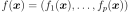,
with
and
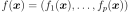,
with  and
and  .
.In the first usage:
Draws graph of the given 1D outputMarg marginal 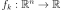 as a function of the given 1D inputMarg marginal with respect to the variation of
 in the interval
in the interval
![[x_i^{min}, x_i^{max}]](../../_images/math/89bef77d2f2b3cc33402ec8df300201af8a6b706.svg) , when all the other components of
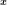 are fixed to the corresponding ones of the central point CP.
Then OpenTURNS draws the graph:
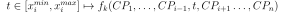.
, when all the other components of
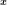 are fixed to the corresponding ones of the central point CP.
Then OpenTURNS draws the graph:
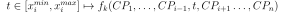.In the second usage:
Draws the iso-curves of the given outputMarg marginal
 as a
function of the given 2D firstInputMarg and secondInputMarg marginals
with respect to the variation of 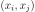 in the interval
as a
function of the given 2D firstInputMarg and secondInputMarg marginals
with respect to the variation of 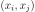 in the interval
![[x_i^{min}, x_i^{max}] \times [x_j^{min}, x_j^{max}]](../../_images/math/f745ac6b363f937777c69e6194f8b8f2c846e142.svg) , when all the
other components of are fixed to the corresponding ones of the
central point CP. Then OpenTURNS draws the graph:
, when all the
other components of are fixed to the corresponding ones of the
central point CP. Then OpenTURNS draws the graph:
![(t,u) \in [x_i^{min}, x_i^{max}] \times [x_j^{min}, x_j^{max}] \mapsto f_k(CP_1, \dots, CP_{i-1}, t, CP_{i+1}, \dots, CP_{j-1}, u, CP_{j+1} \dots, CP_n)](../../_images/math/915859db4c00583ab1668cd77606b4ae016da223.svg) .
.In the third usage:
The same as the first usage but only for function
 .
.In the fourth usage:
The same as the second usage but only for function 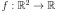.
Examples
>>> import openturns as ot >>> from openturns.viewer import View >>> f = ot.SymbolicFunction('x', 'sin(2*pi_*x)*exp(-x^2/2)') >>> graph = f.draw(-1.2, 1.2, 100) >>> View(graph).show()
- getCallsNumber()¶
Accessor to the number of times the function has been called.
- Returns
- calls_numberint
Integer that counts the number of times the function has been called since its creation.
- getClassName()¶
Accessor to the object’s name.
- Returns
- class_namestr
The object class name (object.__class__.__name__).
- getDescription()¶
Accessor to the description of the inputs and outputs.
- Returns
- description
Description Description of the inputs and the outputs.
- description
Examples
>>> import openturns as ot >>> f = ot.SymbolicFunction(['x1', 'x2'], ... ['2 * x1^2 + x1 + 8 * x2 + 4 * cos(x1) * x2 + 6']) >>> print(f.getDescription()) [x1,x2,y0]
- getEvaluation()¶
Accessor to the evaluation function.
- Returns
- function
EvaluationImplementation The evaluation function.
- function
Examples
>>> import openturns as ot >>> f = ot.SymbolicFunction(['x1', 'x2'], ... ['2 * x1^2 + x1 + 8 * x2 + 4 * cos(x1) * x2 + 6']) >>> print(f.getEvaluation()) [x1,x2]->[2 * x1^2 + x1 + 8 * x2 + 4 * cos(x1) * x2 + 6]
- getEvaluationCallsNumber()¶
Accessor to the number of times the function has been called.
- Returns
- evaluation_calls_numberint
Integer that counts the number of times the function has been called since its creation.
- getGradient()¶
Accessor to the gradient function.
- Returns
- gradient
GradientImplementation The gradient function.
- gradient
- getGradientCallsNumber()¶
Accessor to the number of times the gradient of the function has been called.
- Returns
- gradient_calls_numberint
Integer that counts the number of times the gradient of the Function has been called since its creation. Note that if the gradient is implemented by a finite difference method, the gradient calls number is equal to 0 and the different calls are counted in the evaluation calls number.
- getHessian()¶
Accessor to the hessian function.
- Returns
- hessian
HessianImplementation The hessian function.
- hessian
- getHessianCallsNumber()¶
Accessor to the number of times the hessian of the function has been called.
- Returns
- hessian_calls_numberint
Integer that counts the number of times the hessian of the Function has been called since its creation. Note that if the hessian is implemented by a finite difference method, the hessian calls number is equal to 0 and the different calls are counted in the evaluation calls number.
- getId()¶
Accessor to the object’s id.
- Returns
- idint
Internal unique identifier.
- getImplementation()¶
Accessor to the underlying implementation.
- Returns
- implImplementation
The implementation class.
- getInputDescription()¶
Accessor to the description of the input vector.
- Returns
- description
Description Description of the input vector.
- description
Examples
>>> import openturns as ot >>> f = ot.SymbolicFunction(['x1', 'x2'], ... ['2 * x1^2 + x1 + 8 * x2 + 4 * cos(x1) * x2 + 6']) >>> print(f.getInputDescription()) [x1,x2]
- getInputDimension()¶
Accessor to the dimension of the input vector.
- Returns
- inputDimint
Dimension of the input vector
 .
.
Examples
>>> import openturns as ot >>> f = ot.SymbolicFunction(['x1', 'x2'], ... ['2 * x1^2 + x1 + 8 * x2 + 4 * cos(x1) * x2 + 6']) >>> print(f.getInputDimension()) 2
- getMarginal(*args)¶
Accessor to marginal.
- Parameters
- indicesint or list of ints
Set of indices for which the marginal is extracted.
- Returns
- marginal
Function Function corresponding to either 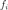 or
 , with
, with  and 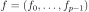.
and 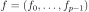.
- marginal
- getName()¶
Accessor to the object’s name.
- Returns
- namestr
The name of the object.
- getOutputDescription()¶
Accessor to the description of the output vector.
- Returns
- description
Description Description of the output vector.
- description
Examples
>>> import openturns as ot >>> f = ot.SymbolicFunction(['x1', 'x2'], ... ['2 * x1^2 + x1 + 8 * x2 + 4 * cos(x1) * x2 + 6']) >>> print(f.getOutputDescription()) [y0]
- getOutputDimension()¶
Accessor to the number of the outputs.
- Returns
- number_outputsint
Dimension of the output vector 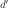.
Examples
>>> import openturns as ot >>> f = ot.SymbolicFunction(['x1', 'x2'], ... ['2 * x1^2 + x1 + 8 * x2 + 4 * cos(x1) * x2 + 6']) >>> print(f.getOutputDimension()) 1
- getParameterDescription()¶
Accessor to the parameter description.
- Returns
- parameter
Description The parameter description.
- parameter
- getParameterDimension()¶
Accessor to the dimension of the parameter.
- Returns
- parameterDimensionint
Dimension of the parameter.
- gradient(inP)¶
Return the Jacobian transposed matrix of the function at a point.
- Parameters
- pointsequence of float
Point where the Jacobian transposed matrix is calculated.
- Returns
- gradient
Matrix The Jacobian transposed matrix of the function at point.
- gradient
Examples
>>> import openturns as ot >>> f = ot.SymbolicFunction(['x1', 'x2'], ... ['2 * x1^2 + x1 + 8 * x2 + 4 * cos(x1) * x2 + 6','x1 + x2']) >>> print(f.gradient([3.14, 4])) [[ 13.5345 1 ] [ 4.00001 1 ]]
- hessian(inP)¶
Return the hessian of the function at a point.
- Parameters
- pointsequence of float
Point where the hessian of the function is calculated.
- Returns
- hessian
SymmetricTensor Hessian of the function at point.
- hessian
Examples
>>> import openturns as ot >>> f = ot.SymbolicFunction(['x1', 'x2'], ... ['2 * x1^2 + x1 + 8 * x2 + 4 * cos(x1) * x2 + 6','x1 + x2']) >>> print(f.hessian([3.14, 4])) sheet #0 [[ 20 -0.00637061 ] [ -0.00637061 0 ]] sheet #1 [[ 0 0 ] [ 0 0 ]]
- isLinear()¶
Accessor to the linearity of the function.
- Returns
- linearbool
True if the function is linear, False otherwise.
- isLinearlyDependent(index)¶
Accessor to the linearity of the function with regard to a specific variable.
- Parameters
- indexint
The index of the variable with regard to which linearity is evaluated.
- Returns
- linearbool
True if the function is linearly dependent on the specified variable, False otherwise.
- parameterGradient(inP)¶
Accessor to the gradient against the parameter.
- Returns
- gradient
Matrix The gradient.
- gradient
- setDescription(description)¶
Accessor to the description of the inputs and outputs.
- Parameters
- descriptionsequence of str
Description of the inputs and the outputs.
Examples
>>> import openturns as ot >>> f = ot.SymbolicFunction(['x1', 'x2'], ... ['2 * x1^2 + x1 + 8 * x2 + 4 * cos(x1) * x2 + 6']) >>> print(f.getDescription()) [x1,x2,y0] >>> f.setDescription(['a','b','y']) >>> print(f.getDescription()) [a,b,y]
- setEvaluation(evaluation)¶
Accessor to the evaluation function.
- Parameters
- function
EvaluationImplementation The evaluation function.
- function
- setGradient(gradient)¶
Accessor to the gradient function.
- Parameters
- gradient_function
GradientImplementation The gradient function.
- gradient_function
Examples
>>> import openturns as ot >>> f = ot.SymbolicFunction(['x1', 'x2'], ... ['2 * x1^2 + x1 + 8 * x2 + 4 * cos(x1) * x2 + 6']) >>> f.setGradient(ot.CenteredFiniteDifferenceGradient( ... ot.ResourceMap.GetAsScalar('CenteredFiniteDifferenceGradient-DefaultEpsilon'), ... f.getEvaluation()))
- setHessian(hessian)¶
Accessor to the hessian function.
- Parameters
- hessian_function
HessianImplementation The hessian function.
- hessian_function
Examples
>>> import openturns as ot >>> f = ot.SymbolicFunction(['x1', 'x2'], ... ['2 * x1^2 + x1 + 8 * x2 + 4 * cos(x1) * x2 + 6']) >>> f.setHessian(ot.CenteredFiniteDifferenceHessian( ... ot.ResourceMap.GetAsScalar('CenteredFiniteDifferenceHessian-DefaultEpsilon'), ... f.getEvaluation()))
- setInputDescription(inputDescription)¶
Accessor to the description of the input vector.
- Parameters
- description
Description Description of the input vector.
- description
- setName(name)¶
Accessor to the object’s name.
- Parameters
- namestr
The name of the object.
- setOutputDescription(inputDescription)¶
Accessor to the description of the output vector.
- Parameters
- description
Description Description of the output vector.
- description
- setParameter(parameter)¶
Accessor to the parameter values.
- Parameters
- parametersequence of float
The parameter values.
- setParameterDescription(description)¶
Accessor to the parameter description.
- Parameters
- parameter
Description The parameter description.
- parameter